生命教育專業發展工作坊
思考素養
知識與技能．情意與態度．後設思考
進入全螢幕．開始演講
孫效智 教授 | 國立臺灣大學生命教育研發育成中心
楔子
覺察：誰在你的腦袋裡旁白？
思考：你在發呆、胡思亂想、思考 ？
今日的思考旅程
壹．思考素養導論
看電影學思考：觀察陪審員如何思考
影響思考的因素與思考的盲點
值得稱道與學習之處
貳．思考素養的三個子題
知識與技能 ：目標、方法與邏輯情意與態度 ：立場不必中立、態度必須公正後設思考 ：對思考進行思考
《十二怒漢》12 Angry Men（1957）
紐約貧民窟的一名十八歲少年被控深夜持彈簧刀刺死父親。檢方提出人證與物證，法庭初步認定這是一樁預謀殺人案。
依美國陪審制，少年是否有罪不是由法官一人說了算——十二位陪審員必須做出一致 的決定。
Life is in their hands; death is on their minds!——本片宣傳語
《12 Angry Men》（Sidney Lumet 執導，1957）
檢方的三項證詞
證詞一：跛腳老人
住在樓下的跛腳老人自稱親耳聽到少年大叫「我要殺死你」，接著聽到死者倒地的聲音。他走到樓梯口，目睹少年跑下樓梯；上樓探望，發現死者陳屍地上。
證詞二：對街婦女
對街大樓的婦女自稱親眼目睹少年一刀插入父親胸口。當晚天氣太熱睡不著，她打開床邊窗戶透氣，午夜十二點透過穿越兩棟大樓之間、無乘客電車的倒數兩節車窗，瞥見少年高舉刀子刺下。
證詞三：商店老闆
商店老闆證實，案發當天少年到店裡買了一把「罕見的」彈簧刀，而插在死者身上的兇刀正是那種彈簧刀。
少年的抗辯
那天爸爸揍了他一頓。他跑出去跟朋友聊天，回家後又去看了一場電影。
半夜三點回到家門口，卻發現警察在現場等候，以及父親的屍體。他自稱沒有殺人。
他當天確實買了一把彈簧刀放在口袋裡，不料口袋有個破洞，刀掉了。
但他說不清楚當晚所看電影的名稱、劇情與主要演員。
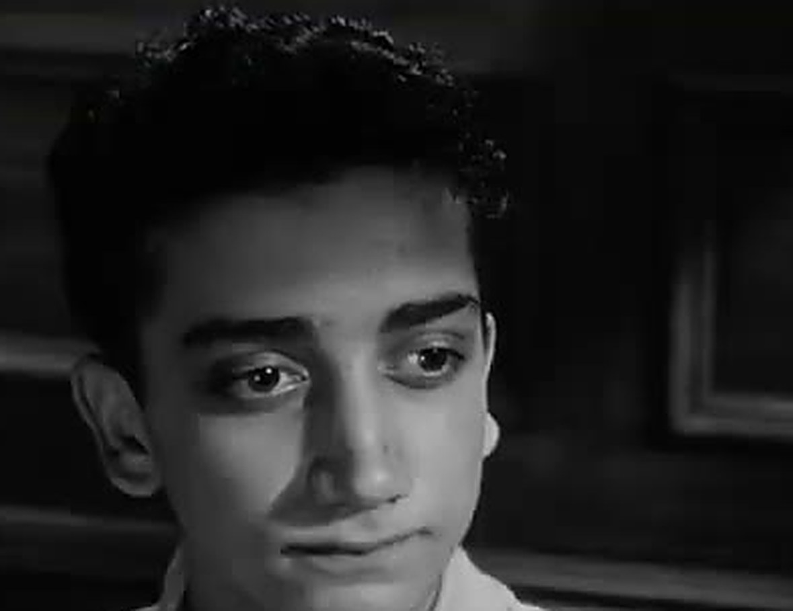
一個住在貧民窟的十八歲男孩
陪審員回顧
十二位素不相識的陪審員，背景、性格、立場各異。
他們必須在同一個房間裡，透過討論做出一致 的判決——接下來，我們逐一觀察他們如何思考。
十二位陪審員的角色
序號
角色與性格
改判
1 陪審團團長，中學美式足球教練。對眾人意見相當寬容 9 2 銀行員，膽怯而謙遜。一開始意見被他人左右，討論後逐漸有了自己的觀點 5 3 通訊公司老闆，傲慢咄咄逼人。與兒子不和，使他對弒父案懷有根深蒂固的成見 12 4 股票經紀人，理性冷靜，只依據有說服力的證據下判斷 11 5 貧民窟出身的工廠職員，依自身成長經驗理解案情 3 6 裝潢工人，個性強硬但尊重人 6 7 果醬銷售商、洋基隊球迷，急著散會去看球賽，對討論漫不經心且煩躁 7 8 建築師，首位懷疑男孩是否有罪並力排眾議者。片尾揭示其名「戴維斯」（Davis，意為達味之子） 1 9 觀察力敏銳且富同理心的老年人。片尾揭示其名「麥卡德」（McCardle） 2 10 修車廠業主，盛氣凌人且頑固偏執，喜歡大聲嚷嚷 10 11 歸化為美國籍的移民鐘錶匠，聰明而擅長分析 4 12 廣告企劃師，說話俏皮，漫不經心，三度改變投票決定 8
小組討論
哪些因素影響陪審員的思考？（第 1、2 組）
他們在思考時有哪些盲點？（第 3、4 組）
又有哪些值得稱道與學習之處？（第 5、6 組）
從這部電影看，思考素養應包含哪些素質？（第 7、8 組）
小組報告與綜合討論
掃 QR 把全組討論的精華打上來
用手機掃描自己這組對應的 QR Code，即時送出討論精華——本頁與接下來四頁同步更新。
題一：哪些因素影響陪審員的思考？（第 1、2 組）
題三：又有哪些值得稱道與學習之處？（第 5、6 組）
陪審員的思考與論證目標：BRD 原則
BRD（Beyond Reasonable Doubt）是刑事訴訟中，陪審團認定被告有罪時適用的證明標準。
只當控訴方的犯罪證據達到「無法合理懷疑」的程度，方可斷定被告有罪。
若不符合 BRD，則必須判定其無罪。
BRD 原則的論證邏輯
有罪判決 ＝ 排除合理懷疑 ≠ 事實上有罪
無罪判決 ＝ 無法排除合理懷疑 ≠ 事實上無罪
判決結果並非達到真相，而是確定合理懷疑可否排除——有可能冤枉好人，也有可能錯放罪犯。
無罪判決並非證明對方事實上沒犯罪，而是指出：現有支持有罪的證據無法排除合理懷疑。
不同角色的思考特質
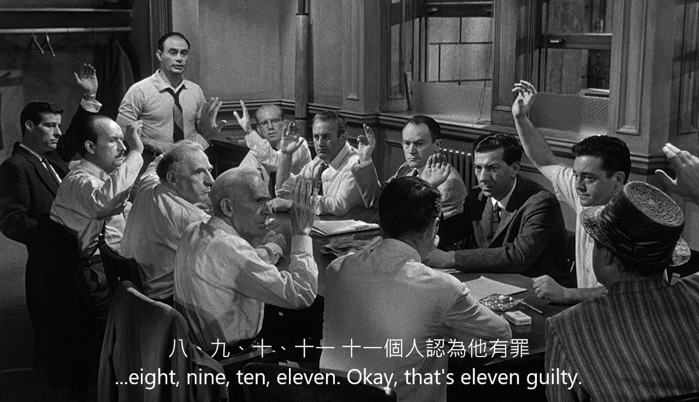
第一次表決：十一比一。以下依十二位陪審員「支持無罪」的先後順序，逐一檢視其思考特質。
支持無罪序
1
8 號陪審員
建築師（片尾揭示名為 Davis）
知識／技能
依陪審 BRD 原則檢視證詞邏輯
前後一致地肯定：檢察官提供的有罪證據不符合 BRD 原則
情意／態度
對涉及生死的決定慎重以對
同理少年處境
態度溫和尊重
後設思考
他並非萬能，不可能注意到所有細節，所以需要透過對話來拼湊完整圖像
他有「無知之知」，故無思考盲點
對照之下，3 號與 7 號的舉證邏輯錯置
第一次表決時，僅 8 號（Davis）一人舉手主張無罪。
3 號與 7 號質疑 Davis：「你真的覺得他無罪 嗎？」
然而，這個質疑有舉證邏輯錯置 的問題——依 BRD 原則，8 號不必證明少年無罪，而是必須排除有罪的合理懷疑。
支持無罪序
2
9 號陪審員
觀察力敏銳且富同理心的老年人
知識／技能
觀察力敏銳：理解老人想要出名的心理，也觀察到女證人鼻子上的眼鏡痕跡
邏輯清楚：8 號沒說少年無罪，只說「不能確認少年有罪」的論點無可懷疑
支持無罪序
3
5 號陪審員
貧民窟出身的工廠職員
知識／技能
同意電車經過老人窗口時發出轟隆隆的噪音——老人或許聽到了爭吵聲，卻聽不清楚到底發生了什麼事；也認同大喊「我要殺了你」這句話不一定真的會執行
情意／態度
結合自身成長經驗來「理解」案情，但不會堅持己見
在貧民窟長大，對自己的出身感到自卑。討論開始時較少發言，後來才加入討論
後設思考
被冤枉的經驗可能讓他意識到 3 號與 8 號的主觀及非理性情緒
支持無罪序
4
11 號陪審員
歸化為美國籍的德國鐘錶匠
知識／技能
聰明且擅長分析、整理筆記並提出自己的疑問
對少年為何返回現場提出自己的疑問，並認同有其他可能性，心中出現了合理的懷疑
情意／態度
被 7 號「從有罪轉為無罪」的無所謂態度激怒，正義凜然地質問：是不是在拿生命當兒戲？若主張有罪就要堅持下去。7 號在他嚴厲的質問下無言以對
後設思考
在討論逐漸演變成人身攻擊時，他站出來提醒大家所擔負的責任——如此暢所欲言的民主形式正是這個國家強盛的原因
知識／技能
認同 8 號依房屋平面圖模擬老人走路的秒數——證詞是 15 秒，實際模擬是 41 秒
邏輯謬誤：認為「沒有人能證明他無罪」，因此被 8 號反駁
情意／態度
隨著討論開展，逐漸改變自己的觀點，想知道更多案情細節
有主觀直覺，但不善於表達想法
情意／態度
正義感強烈、有原則
十分尊重長者——3 號對 9 號態度無禮時，他是第一個站出來警告 3 號的人
知識／技能
認同 8 號依房屋平面圖模擬老人走路的秒數——證詞是 15 秒，實際模擬是 41 秒
後設思考
當證詞疑點越來越多時，願意接受其他合理懷疑的可能性
他的反轉促成了平局的轉折點
支持無罪序
7
7 號陪審員
果醬銷售商、洋基隊球迷
情意／態度
把想看球賽的享樂利益置於判決之前，不在乎判決結果
討論過程漫不經心且煩躁：一開始投「有罪」是因為想趕去球賽，投「無罪」又是因為厭倦了討論——此態度讓 11 號非常反感
後設思考
為了盡快達成決議，突然反轉改為「無罪」，卻說不出讓人信服的理由——這不算是一種真正的思想轉折
他兩次試著打開電扇，讓人發現打不開的原因——人容易在未深究的情形下，想當然爾地進行歸因
支持無罪序
8／11
12 號陪審員
廣告企劃師，三度改變投票決定
情意／態度
一開始對討論心不在焉，在 8 號發表意見時和 3 號玩圈圈叉叉
知識／技能
第一次投無罪：認同 8 號詢問 4 號電影劇情的討論——4 號在沒有情緒壓力下仍遺忘細節，何況少年被警察訊問時的高壓；並對彈簧刀向上或向下的使用方式存疑
當 4 號再次陳述女證人證詞、被質問為什麼認為少年無罪後，隨即改變心意為「有罪」
第二次投無罪：聽了 9 號與 4 號的討論，針對鼻旁眼鏡印子這點，對女證人的視力產生疑慮
後設思考
每次對證詞的討論都出現新的合理懷疑，因此被不同證據與論述所說服，三度改變投票決定
支持無罪序
9
1 號陪審員
陪審團團長、中學美式足球教練
知識／技能
認同 8 號詢問 4 號電影劇情的討論——4 號在沒有情緒壓力下仍遺忘細節，何況少年被警察訊問時的高壓；並對彈簧刀的使用方式存疑
知識／技能
聽了 9 號與 4 號的討論，針對鼻旁眼鏡印子這點，對女證人的視力產生疑慮
情意／態度
氣勢凌人且頑固偏執，喜歡大聲嚷嚷
最後發表的階級偏見言論引來了所有人的反感
後設思考
懷有階級偏見，沒有耐心聽大家討論；因偏見影響判斷，不重視推理過程
負面的情意態度與刻板印象，讓他的思考有很多武斷與偏見
知識／技能
討論過程理性冷靜，只依據有說服力的證據來下判斷
聽了 9 號的觀察，針對女證人鼻旁的眼鏡印子，對其視力（未戴眼鏡目擊）產生合理懷疑
情意／態度
討論時不自覺帶入個人經驗與偏見：因自身與兒子不和，對少年弒父案懷有深刻成見，多次自相矛盾發言，無法理性評估
討論中曾衝動地對 8 號說「我要殺了你！」——易情緒性發言
想到兒子就顯出憤恨與創傷，但把合照放在皮夾裡顯示他其實珍惜父子關係
後設思考
從他衝動撕照片的行為可以推想，父子衝突未必是兒子單方面造成，也可能因他的衝動傷害了兒子
意識到自己常有衝動發言與決定，最後冷靜下來做出「無罪」決定，是十二位陪審員中最後一位表示少年無罪的
電影小結：影響思考的因素
思考者的生命背景與經驗
思考者所處的外在情境
思考者的身心靈狀態
情意態度與思考盲點
個人生命背景 ：導致的成見與意識形態目的與動機 ：不純正與匱乏靈性層面 ：苦毒、愛的匱乏、無明、冥頑不靈感性層面 ：漫不經心、心浮氣躁、從眾知性層面 ：舉證方向錯置
對話中的情緒與思考盲點
3 號情緒失控，衝動對 8 號說出「我要殺了你」
陪審員值得稱道之處
目的與動機 ：在意判決公正，關心他人死生感性層面 ：不受主觀情緒干擾、專注、耐煩知性層面 ：無罪推定、大膽假設小心求證、推理符合邏輯、BRD對話層面 ：道德勇氣、同理、對話的堅定與溫柔靈性層面 ：支持上述各層面的自覺、反思與努力
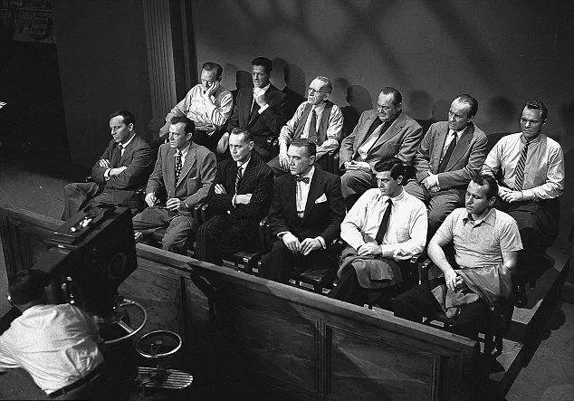
Thanks for your(their) attention!
何謂思考素養？
廣義言，以理性的批判、靈性的覺察，追求智慧的態度從事思考，或對自己的思考進行思考之謂。
思考素養包含三個子題：
知識與技能
理解正確思考的基本原理與方法，並認識影響自己思考的可能因素（世界觀、價值觀、意識型態、偏見、謬誤等）。
情意與態度
覺察阻礙正確思考的情意與態度（先入為主、爭輸贏、鄉愿、私欲等），體認並涵養有益正確思考的情意與態度（客觀、開放、公正、勇氣等）。
後設思考
抽象而言，指對思考進行思考，以掌握思考的本質、特性以及正確思考應具備的素養。具體而言，對自己的思考模式與習慣進行反思與調整，以提升自己的思考素養。
觀看《十二怒漢》，從而探究思考的內涵，正是在對思考進行後設思考。
思考的重要性
很多時候人有直覺的想法，但不知背後的所以然，也無法清楚論述。
理未易明
思考需要練習與精進
思考本身也需要修正與學習——後設思考 ，精進思考素養 。
「思考素養」與「後設思考」相互為用、互為因果：人在思考特定議題的過程中進行後設思考，便有機會調整自己思考的情意與態度，磨練思考的知識與技能，從而涵泳與提升思考素養。
思考的知識、方法與技能
如何辨明事實 ，認出真相？
如何進行價值思辨 ？
如何從事司法判決 ？——舉證責任．刑事判決三階段．邏輯推理
如何辨明事實，認出真相？
小組討論
關於事實與真相的辨明，人會遇到哪些困難？
眼見為憑？
兩條線段其實一樣長（Müller-Lyer 錯覺）
真相需要摸索！
課堂影片
《十二怒漢》「電風扇」片段——7 號兩次打不開電扇，眾人想當然爾地認為電扇壞掉，直到後來才發現真正的原因是它與電燈開關連動，打開電燈後就能打開電扇。
片面之詞不足為憑！
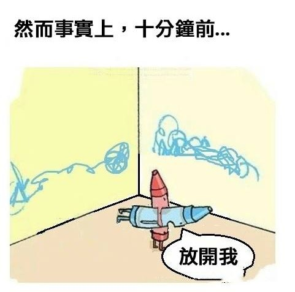
看起來「毫無說服力的辯解」，往往只是因為我們沒看到十分鐘前發生的事。
自我中心、觀點、認同與事實
日動 vs. 地動
地球 vs. 水球
中國人 vs. 大陸人
媒體與真相
媒體知道如何利用真相的繁複，塑造出有利於它自身、或它想操弄的真相樣貌。
唐僧來台灣
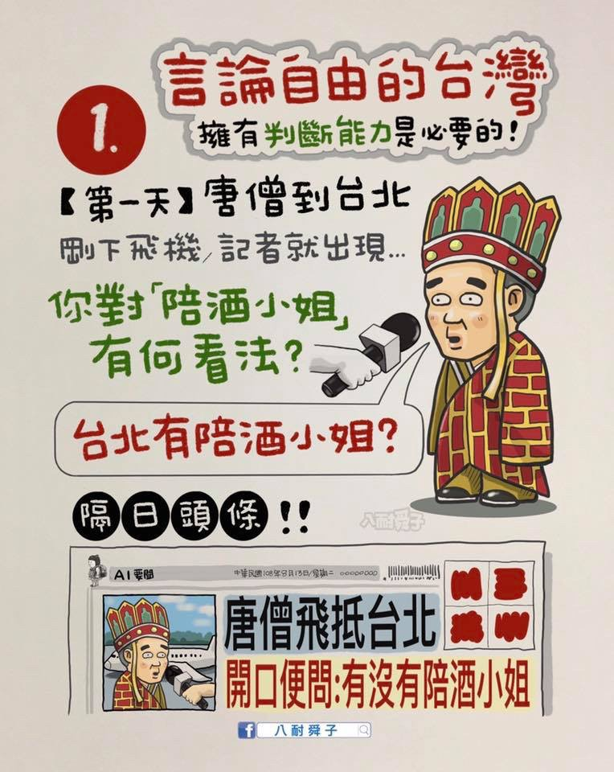
唐僧來台灣
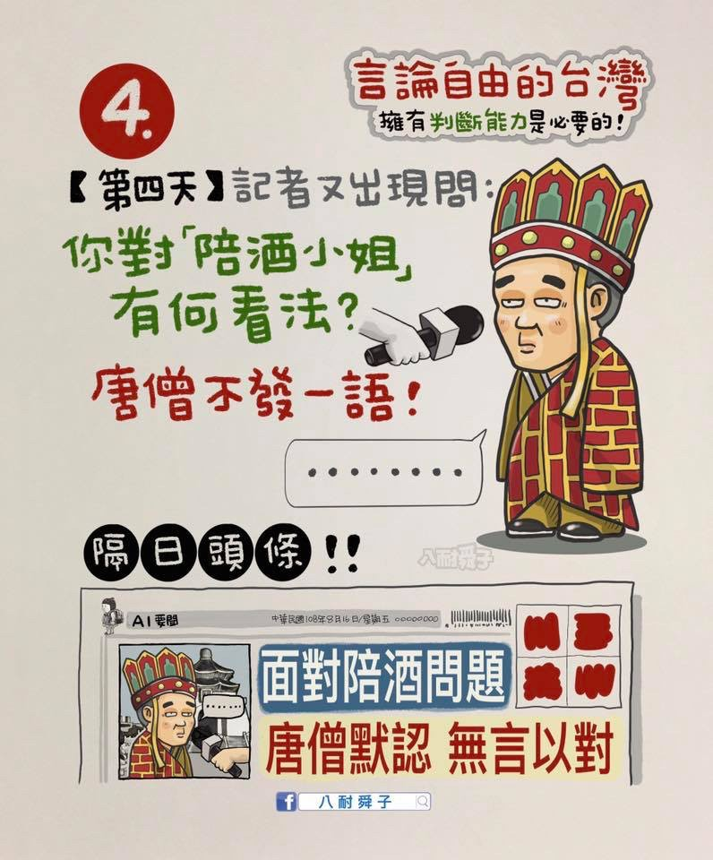
唐僧來台灣
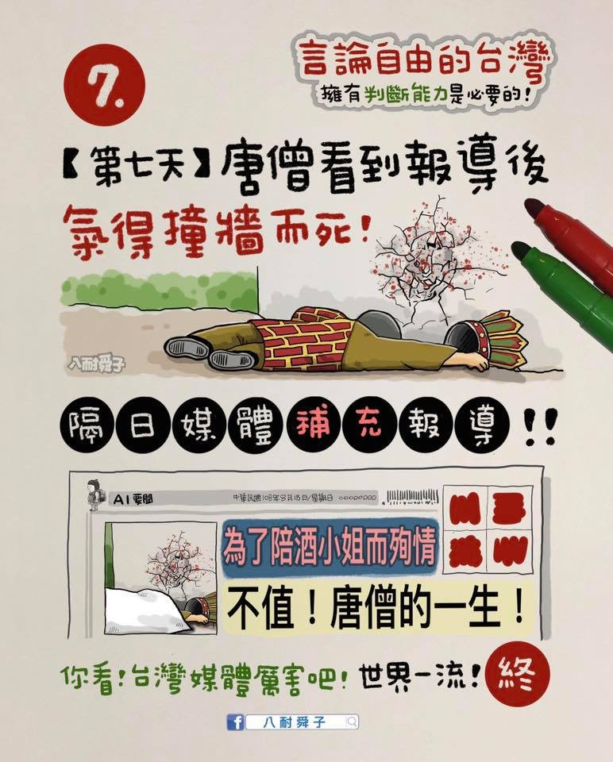
同一組素材，剪接順序不同，故事就完全不同——剪接可以製造「真相」。
盡信媒體不如無媒體
盡信書不如無書；
你有看新聞的習慣嗎？
If you don't read the newspaper, you're uninformed. If you read the newspaper, you're mis-informed.——常被歸於馬克．吐溫（Mark Twain），原始出處待查證
「不看新聞與世界脫節，看了新聞與事實脫節」（八耐舜子）
History ≠ Historiography
任何人為了瞭解歷史，都不免在海量的史料中，人為地揀選那些他覺得重要的部分，以邏輯鍊條串起，成一家之言。隨著時間的經過，大家逐漸忘了這個人為的過程，而開始把一些既成的觀點當作事實本身來看待，轉述者甚至開始以一種當事人、見證人的口吻去傳播他們所相信的東西。——張若彤
歷史二層面、三向度
History（歷史本身）
真實歷史事件錯綜複雜、各種力量交織、光怪陸離、難以盡道的面向。
Historiography（歷史書寫）
主導書寫的往往是政治權力與商業利益（成者為王，敗者為寇）。
不同背景階層的人所體驗或接觸的面向（瞎子摸象）。
歷史的真相很有可能永遠無法復得，沒有人能掌握完整事實的所有面向，另外，也有可能被人刻意湮滅。
歷史真相？剪不斷，理還亂
中華人民共和國與中華民國
共匪？蔣匪？
何光滬：「貴陽的紀念塔，國人的歷史觀」——「紀念塔」既是貴陽的地名、也曾是實體塔；何光滬藉此指出：多數貴陽人天天講「紀念塔」，卻未必說得清它紀念的是誰、經歷過什麼——地名留下來了，歷史的內容卻可能悄悄流失或被改寫。
成者為王，敗者為寇？
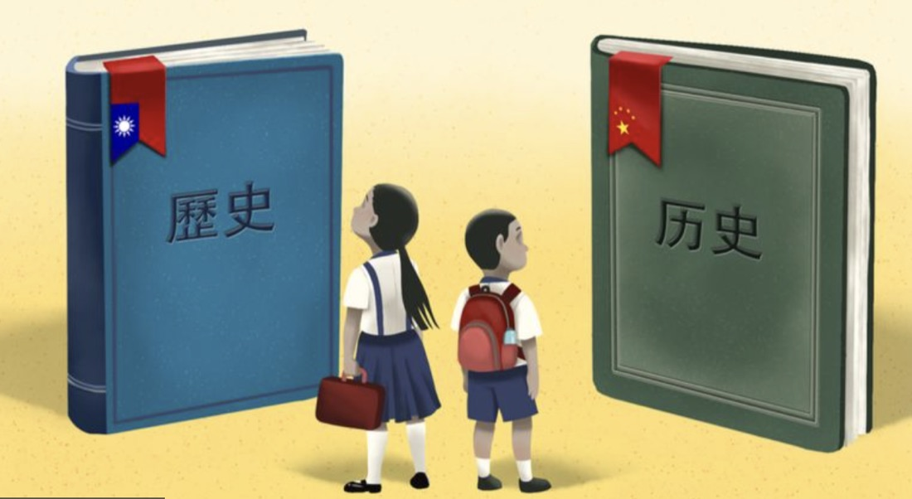
同一段過去，兩本不同的「歷史」。
貴陽的「紀念塔」。
什麼是二二八的真相？
蔣萬安辦二二八紀念會，如納粹後裔紀念猶太人大屠殺？——蔣萬安是蔣介石的曾孫，如今以台北市長身分主持228中樞紀念儀式，被部分輿論形容像是「加害者後代主持受害者的紀念會」，凸顯歷史身分與現實角色之間的複雜張力。
張若彤與許劍虹的非主流史觀——兩人近年提出與官方定調不同的228詮釋（如事件起因、責任歸屬等），引發史觀之爭，顯示同一段歷史至今仍有「誰的說法才是真相」的爭議。
宗教靈異現象與思考
舍利子：一場「查核反轉」案例
舍利子哪來？醫學角度並未有明確定論——肝膽結石？骨骼內礦物質再結晶？
2023年星雲大師荼毘後，佛光山公布靈骨舍利子照片；網路粉專隨即指控照片「盜用淘寶賣場圖」，並附上幾乎一致的賣場截圖，各方隨即大量轉發。
台灣事實查核中心查證：佛光山原始照片為連續拍攝、時地明確；那張「賣場截圖」反而查無實際賣場，且是盜用《人間福報》照片合成而成——「盜圖指控」本身才是假訊息。
這起事件恰好示範了思考素養的核心：查核要看證據（原始檔、拍攝時地、賣場是否存在），不能只憑「兩張圖很像」就下結論。
媽祖的靈異傳說
北港朝天宮「媽祖破案」——舊報紙報導的靈異傳說。
白沙屯媽祖進香途經童綜合醫院，神轎在玻璃前搖擺不去——原來是要提醒院方一面匾額掛錯位置。
終極事實的真相？
人死如燈滅 vs. 死後生命
末世 vs. 來世
創造 vs. 演化
虛無 vs. 生命有意義
如何進行價值思辨？
價值思辨的知識與方法
倫理價值 ：道德哲學或倫理學應用倫理學 健康促進 ：穿越時空的營養師．藥你生病．膽固醇迷思
《正義：一場思辯之旅》（Michael Sandel）．《藥你生病》．《要瘦就瘦，要健康就健康》（賴宇凡）
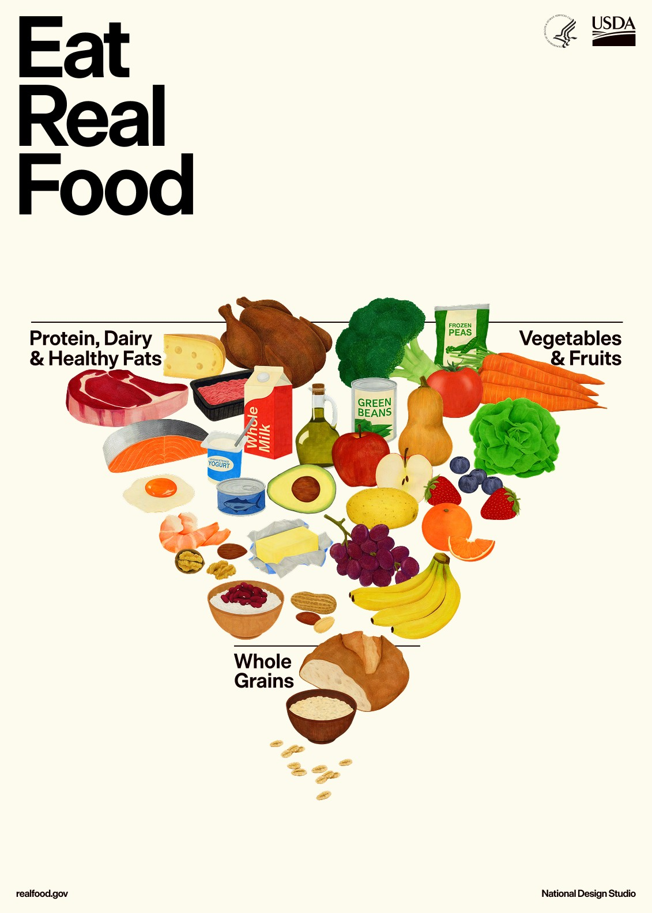
2026年美國飲食指南「倒金字塔」（HHS／USDA）——蔬果與蛋白質、乳製品、健康油脂在上，全穀類在下，翻轉舊金字塔的健康促進論述。
如何進行司法判決？BRD 與舉證責任
刑事案件
檢察官的舉證責任：證明犯罪事實的證據無可懷疑 。
陪審團的舉證責任：指出犯罪事實的證據有可合理懷疑 之處。
民事案件
主張權利的原告負舉證責任。例如原告以有借據為憑要求對方還錢——借貸乃要物契約 ，契約成立以標的物交付為條件；買賣則是諾成契約 ，以雙方合意為成立條件。
以殺人罪之判決為例
中華民國刑法 第 271 條
殺人者，處死刑、無期徒刑或十年以上有期徒刑。
前項之未遂犯罰之。
預備犯第一項之罪者，處二年以下有期徒刑。
中華民國刑法 第 275 條（節錄）
受他人囑託或得其承諾而殺之者，處一年以上七年以下有期徒刑。
教唆或幫助他人使之自殺者，處五年以下有期徒刑。
前二項之未遂犯罰之。
刑事判決三階段
① 構成要件
客觀 ：行為、結果、因果
主觀 ：故意或過失
→ 推定
② 違法性
阻卻違法事由可推翻
例：刑法 §21-1「依法令之行為，不罰」
→ 推定
③ 罪責性
阻卻罪責事由可推翻
例：刑法 §18-1「未滿十四歲人之行為，不罰」
構成要件該當則推定違法，故第二階層檢視有無阻卻違法事由；違法則推定有罪責，故第三階層檢視有無阻卻罪責事由。
邏輯推理
邏輯推理是思考最基本的功夫——
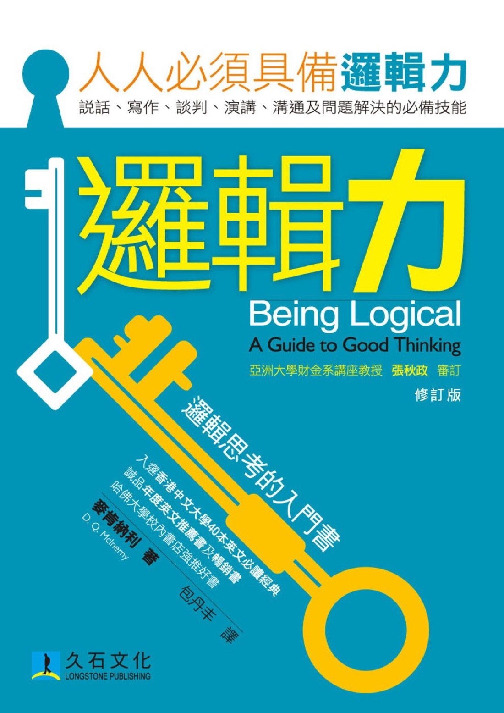
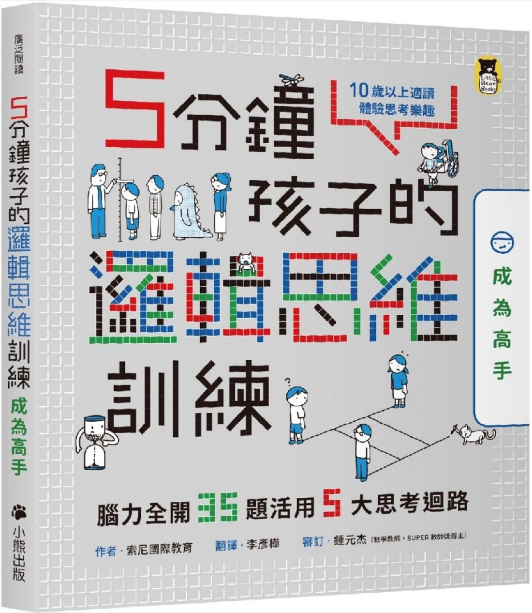
思考的情意與態度：先驗態度與立場影響行動
人們在開始討論特定議題之前，往往已經有特定立場或態度。
例如陪審團一開始時，大部分人覺得不需討論即可表決，且都認為答案很清楚：少年有罪。8 號則不那麼確定，且認為事關生死，不能不討論就做出結論。
態度方面：有人心不在焉，有人心浮氣躁，有人對不同意見容易情緒激動，有人先入為主或有刻板印象，也有人態度開放溫和，把別人的事當事。
這些都深遠地影響人的後續思考與對話。
思考的情意與態度
阻礙正確思考的情意與態度
傲慢
自我中心而無自覺
各種認同
負面情緒
意識形態
後真相與民粹
有益正確思考的情意與態度
謙卑
心中有他者
寬容多元，無差別心
高 EQ
理性反思
熱愛真理與道德勇氣
意識形態
因著個人經驗、各種認同、先入為主的信念、習慣性的觀點等所形成之固化的價值取向、思維慣性或模式。
後真相（post-truth）
2016 年《牛津英語詞典》年度詞彙：「連結或指陳情況時，訴諸情感及個人信念，比陳述客觀事實更能形塑輿論（public opinion）。」
立場不必中立 必須公正
面對爭議性議題時，思考的態度與涵養非常重要。
立場不必中立
沒有立場，往往是鄉愿或「西瓜偎大邊」的立場。
不要害怕採取立場，彷彿不認同任何立場就是最好的立場。
應採取當下所能達到的最適當、客觀與接近真理的立場。
採取立場要有道德勇氣——道德要求於人的正是「擇善固執」：不是堅持保守或開放，而是選擇「善」的方向，然後屹立不搖。
「立場不必中立」意味著人對當下所掌握的真理，要有一種「雖千萬人吾亦往矣」的投身與承擔的勇氣。
對人我立場保持反思態度
問題是：誰有把握自己的立場就是絕對的真理？我們所採取的立場不一定等於絕對真理——無論自己或他人。
因此，應以審慎的態度，批判反思自己及他人的立場。
批判反思的最好態度就是公正 。
苟日新，日日新，又日新。——《禮記．大學》引湯之盤銘
態度必須公正（一）：對自己的立場
不特別偏袒自己的立場，心中願意向新的證據開放。
平心反思：仔細檢視新證據之後，是否讓我更加確定自己原先的立場？抑或它挑戰了我的原有立場，邀請我重構新的想法？
是否有任何新的經驗或論證挑戰了我目前的立場（實然倫理）？又是否有任何理由要求我去檢視：它是否仍是我該相信的應然倫理？
態度必須公正（二）：對他人的立場
愈是敏感與糾結的話題，對不同立場愈容易有先入為主的排斥感——不要讓它影響你傾聽與同理的態度。
平心反思：不要刻意忽略支持對方觀點的論據，或誇大對方觀點的缺失。
公正態度就是超越主觀好惡，以客觀的精神評估他人立場的正反論據，內心真正關懷的是：怎樣的立場才更接近真理？
思考中的靈性修養：知性與感性
思考中的知性
人要進行好的思考，必須在知性層次想清楚思考的目標、學習思考的知識與方法、練習思考的技能。
——但，是什麼支持人這麼做？
思考的感性
思考的情意與態度就是思考感性的部分。感性引導知性：認清思考的目標、掌握思考的知識與方法，也賦予人練習思考技能的動機。
——但，什麼能調整人的情意與態度？
知性與感性，以靈性修養為基礎
人熱愛真理、渴望追求真相的動機是什麼？可能是知識的好奇或其他他律動機，也可能是更高的動機——例如敬畏真理、愛人如己。
如果沒有更高的動機，真理跟真相可能都抵不過經濟的利益、或社會與政治的壓力。
練習需要持之以恆的靈性堅持，也需要在每個當下的警醒。
情意與態度的涵泳，需要時時刻刻對起心動念的察覺與關注——這一切就都涉及靈性修養。
後設思考
系統性的後設思考 ：掌握思考的本質、特性，以及正確思考應具備的素養。思考當下與事後的後設思考 ：對自己的思考模式與習慣進行反思與調整。後設思考與靈性修養 ：思考者要對自己思考時背後的情意與態度保持高度省思與察覺，俯察內在的各種起心動念。
思考素養與生命教育
包含「知識與技能」、「情意與態度」與「後設思考」三個子題的「思考素養」，不僅僅是生命教育的一項核心素養，更是學生學習各種「國民核心素養」時所不可或缺的一項基礎素養 。
它幫助人發掘與面對生活中的各種問題與挑戰，也是探索並養成生命教育其他四項核心素養所不可或缺的要素。
以理性的批判 、靈性的覺察 ，
——孫效智，〈哲學思考〉講義（2023）
引用來源
孫效智（2023）。〈哲學思考〉。生命教育專業發展工作坊講義（2023 年 2 月 18 日），國立臺灣大學生命教育研發育成中心。（原講題「哲學思考」，本簡報依下列指引改稱「思考素養」）
《大專校院生命教育五大核心素養導論式課程學習評量指標參考指引》（1150127 版，尚未定案）——「思考素養」主題及其三個子題（知識與技能、情意與態度、後設思考）之架構依據。
孫效智（2009）。〈主編的話——生命教育的學術研究與真理追求〉。《生命教育研究》，1(1)，頁 ix–x。
孫效智（2013）。〈生命教育核心素養的建構與十二年國教課綱的發展〉。載於國立臺灣大學生命教育研發育成中心、社團法人台灣生命教育學會主辦「第十屆生命教育學術研討會——人的培育：以生命教育翻轉教育」論文集，頁 25。
Lumet, S.（導演）（1957）。《十二怒漢》（12 Angry Men）［電影］。United Artists。（美國公版，未續著作權）
3 號與 8 號衝突劇照（S35）：12 Angry Men trailer screenshot (2).jpg。Wikimedia Commons （公有領域）。
《論語．為政》：「學而不思則罔，思而不學則殆。」
《禮記．大學》引湯之盤銘：「苟日新，日日新，又日新。」
張若彤：History ≠ Historiography 段落引文（轉引自原工作坊簡報）。
Oxford Languages（2016）。Word of the Year: post-truth。
中華民國刑法第 18、21、271、275 條。全國法規資料庫。
Ideaman Studios（2017）。Alternative Math［短片］。youtube.com/watch?v=Zh3Yz3PiXZw
U.S. Department of Health and Human Services, & U.S. Department of Agriculture（2026）。Dietary Guidelines for Americans 2025–2030：Eat Real Food［海報］。commons.wikimedia.org
Galef, J.（2016）。Why you think you're right—even if you're wrong（TEDxPSU）。youtube.com/watch?v=3MYEtQ5Zdn8
McInerny, D. Q.《邏輯力：Being Logical—A Guide to Good Thinking》。久石文化。／索尼國際教育《5 分鐘孩子的邏輯思維訓練》。小熊出版。／Sandel, M.《正義：一場思辯之旅》。／Moynihan, R., & Cassels, A.《藥你生病》（Selling Sickness）。／賴宇凡《要瘦就瘦，要健康就健康》。
「不看新聞／看新聞」語錄常被歸於 Mark Twain，原始出處無可考（待查證）。「理未易明、事未易察、善未易辨」出處待查證。
其餘插圖（錯覺圖、蠟筆漫畫、八耐舜子漫畫、新聞畫面、兩岸課本插畫等）均轉載自原工作坊簡報所用素材，版權屬原作者。
Thanks for your attention!
臺大生命教育研發育成中心 孫效智教授